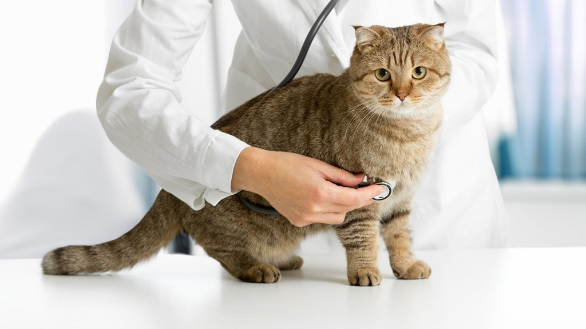
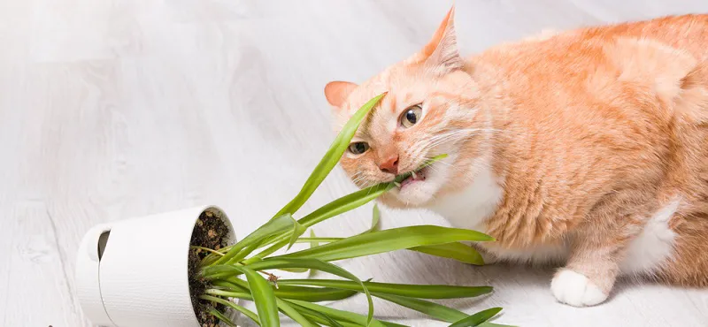
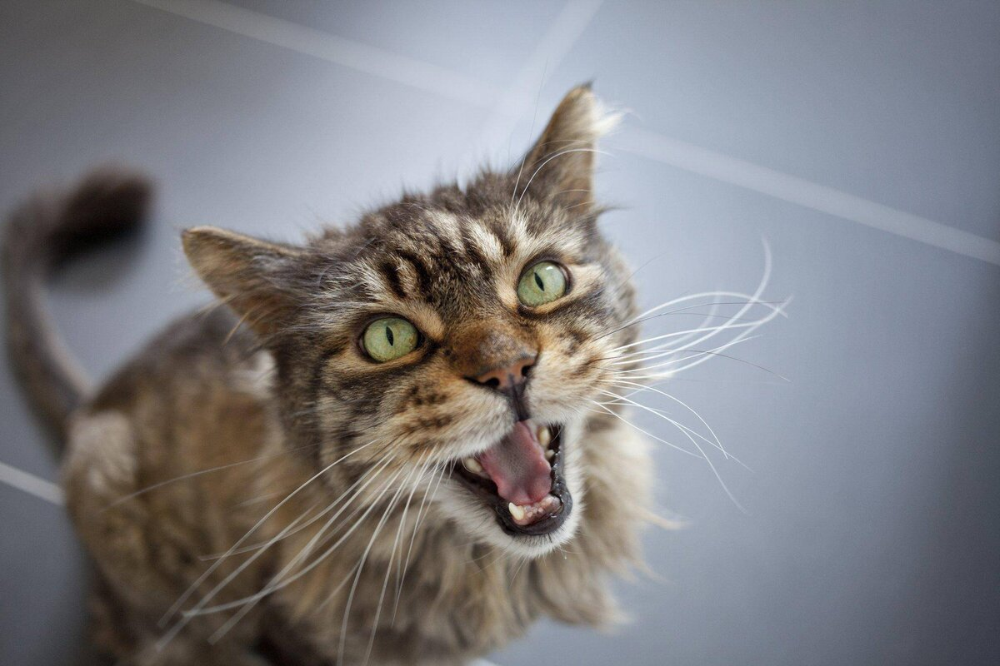
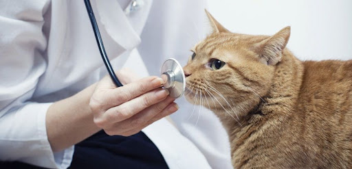

Здоровье

График вакцинации кошек
Каждой кошке, коту и котенку необходима вакцинация против инфекционных заболеваний. График вакцинаци..

Ядовитые для кошек растения и комнатные цветы
Задача ответственных владельцев животных-компаньонов — следить за тем, чтобы их дома были безопасным..

Сколько групп крови у кошек и какие существуют?
Чем дальше развивается ветеринарная медицина, тем больше удивляются многие владельцы схожести людей..

У кошки выпадают зубы – почему и что делать
Некоторые владельцы и не знают, выпадают ли зубы у их питомцев, ведь животные часто скрывают свои пр..
Почему у кошки выпадают усы: причины и что делать
Усы — это не украшение кошки, а важный орган чувств. Эти волоски на морде позволяют животным как бы ..
